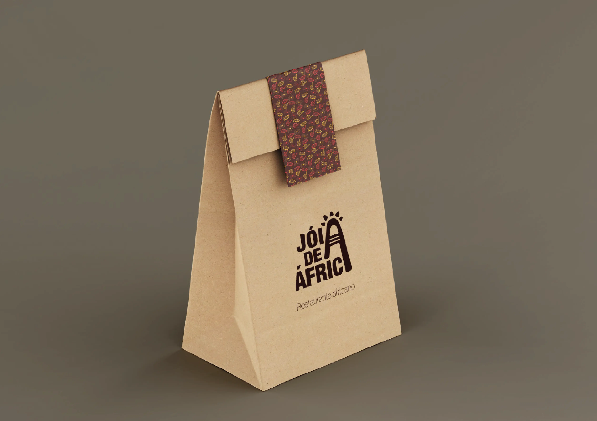
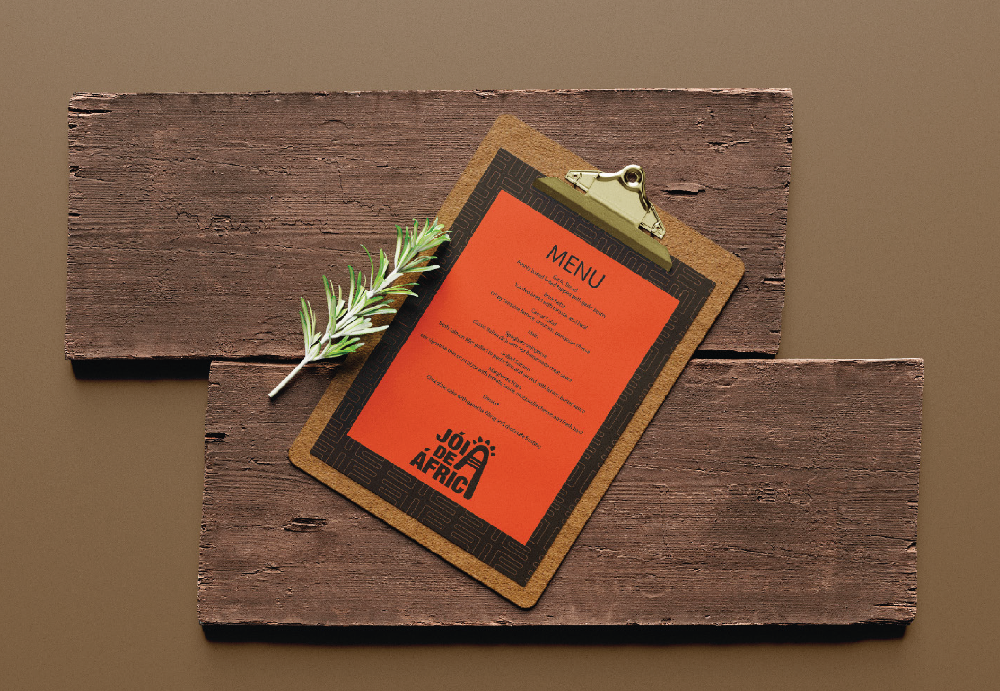
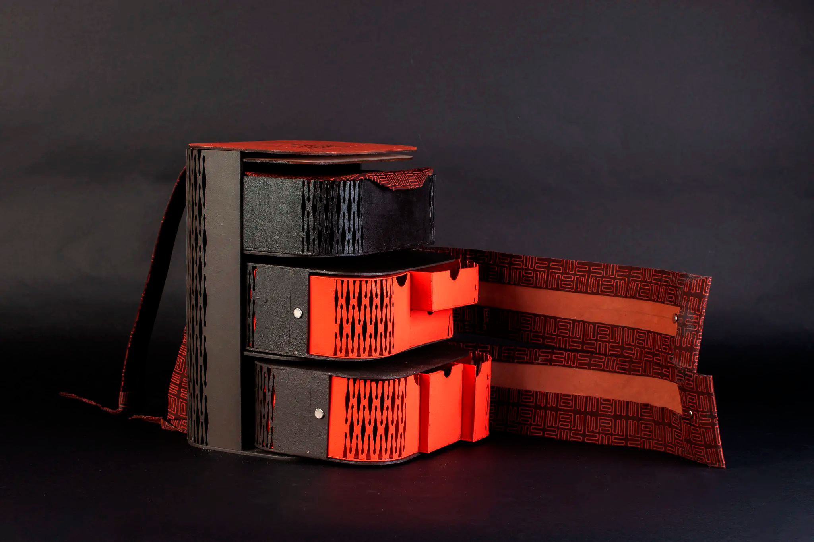

This project, in partnership with the Aga Khan Foundation, aimed to bolster small business growth through strategic rebranding and improved market visibility.
Our team collaborated with Jóia de África, a lively African restaurant based in Lisbon, to enhance its brand identity and expand its business reach. We developed an in-depth brand book outlining cohesive guidelines—from logos and color schemes to typography and visual style.
The rebranding sought to capture the authentic essence of Jóia de África, a space celebrating African culture and cuisine, and to make it more inviting to a wider audience.





"Beauty is in the eye of the beholder, but what is beauty though? It's subjective."K-AFE Brand Philosophy
The visual identity rejects standardized café aesthetics in favor of a brutalist approach that celebrates imperfection and authenticity.
Typography System
The typeface selection combines stark, industrial sans-serifs with subtle Korean typographic influences. Headlines use condensed weights with negative letter-spacing to create tension and impact, while body text maintains readability through careful spacing and hierarchy.
Color Philosophy
The color palette is deliberately constrained—primarily black and white with strategic use of neon pink (#ff00d4) as an accent. This limitation forces creativity within constraints and ensures maximum impact when color is employed.

We created a functional, portable bag for a working station, featuring three removable drawers, each designed for different storage needs, such as compartments for spices.
To bring this concept to life, we built a high-fidelity prototype at a 1:2 scale, utilizing laser-cut MDF and cardboard for the structure. For a smooth curve at the corners, we applied a custom cutting pattern to bend the wood effectively.
The fabric was decorated with a custom design using the silk-screen technique, and the entire bag received a hand-painted finish with acrylics, adding a unique, artisanal touch.
This station is both practical and portable, allowing chefs to carry essential tools and ingredients with ease, and it captures the distinctive aesthetic of the Jóia de África brand.



Digital Presence
The website and social media presence maintain the same bold aesthetic while ensuring usability and accessibility. Interactive elements use the brand's signature glitch effects and bold typography to create engaging digital experiences.
As our first product design project, our team felt a strong sense of accomplishment. Every detail—from measurements to painting techniques—was carefully considered and executed.
It was an intense process that challenged us, but we're proud of the results we achieved.
Research & Discovery
Deep dive into Korean typography, café culture analysis, and competitor landscape mapping to identify opportunities for differentiation.
Concept Development
Exploration of brutalist design principles, testing bold typography combinations, and developing the core brand philosophy.
Visual System
Creation of comprehensive brand guidelines, asset libraries, and application standards across all touchpoints.
Implementation
Rollout across physical and digital platforms, with ongoing refinement based on real-world application feedback.
The iterative process involved constant testing and refinement. Early concepts were too aggressive and risked alienating potential customers, while later iterations found the right balance between bold and approachable.
Client collaboration was crucial throughout the process. Regular feedback sessions ensured the final identity aligned with business objectives while pushing creative boundaries.